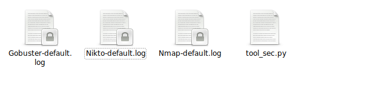

Comenzamos buscando la ip con netdiscover.
Entramos a página con la dirección que obtuvimos en el explorador.
Al parecer solo es una web con fondo negro, revisamos el código a ver si hay algo relevante.
Hay algo raro, aunque no se ve nada en la página, se puede ver algunos links hacia unas imagenes en el código. Es hora de revisar posibles links escondidos, puertos abiertos y vulnerabilidades, para eso usaré la aplicación.

Revisando lo archivos, no hubo nada fuera de lo común, sin embargo, hubo un link hacia las imagenes
Viendo cada imagen, no hay nada raro, sin embargo, hay dos con un nombre parecido a la prueba, podría ser una pista, foxy.jpeg y foxy1.jpg, aunque son la misma imagen, tienen una diferencia evidente, el peso 93K y 99K
Vamos a hacer Esteganografía, usaremos steghide, en la aplicación ya se encuentra, solo es darle enter cuando pide salvoconducto, y listo, nos salio un archivo "msg.txt".
Nos aparece un mensaje cifrado, en consola se utiliza base64 -d msg.txt y nos aparece un mensaje, que parece ser una constraseña
Hagamos una prueba de acceso mediante ssh, se puede usar hydra para descubrir el usuario, pero antes hay que intentarlo con los nombres de las imagenes. Utilice como usuario... foxy, luego fox.
Logramos el primer objetivo, por lo regular se empieza a investigar el servidor, con archivos escondidos, usuarios con acceso root, aplicaciones con permisos elevados, etc... pero al revisar con ls -lah, nos encontramos con una aplicación que dice GiveMeRootPlz y tiene permisos root. Creo está de sobra buscar más.
Abrimos la aplicación con GDB, y solo encontramos una funcion llamada overflow, creo es una pista, pero tampoco hay nada, sin embargo, se puede obervar un buffer de 512 si analizamos ebp, y obtenemos 0x41414141.
Sin embargo con 512 bytes no se pudo sobreescribir ret, así que aumentamos a 516 bytes y metemos "BBBB" y logramos sobreescribirlo. Pero, ¿y después qué?
Buscamos información por algunas funciones, con info function y nos apareció algo interesante.
Hay algo que puede ser una gran pista, hay un system@plt, lo que significa que hay una posibilidad de que ahí se ejecute una shell. Desde el mismo GDB colocamos los 516 bytes, más la dirección hacia la función secret pero no funciona, se termina la ejecución, pero hay un truco para eso y es utilizar cat, guardamos el registro en un lugar con permisos de escritura.
Sin embargo, no funcionó, esto regularmente pasa y es tedioso, pero habrá que buscarlo manualmente.
Después de un rato, y de modificar los hexadecimales, al parecer solo es restarle 1 a los 516 y dejarlo en 515.
Nos ayudamos con python para hacer un spawn.
Listo.